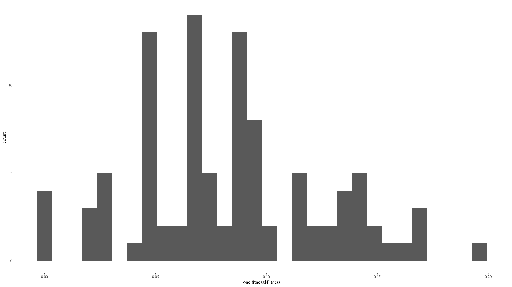
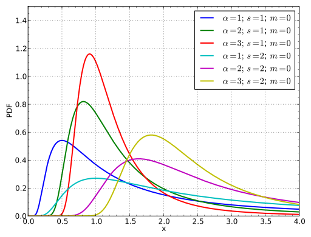
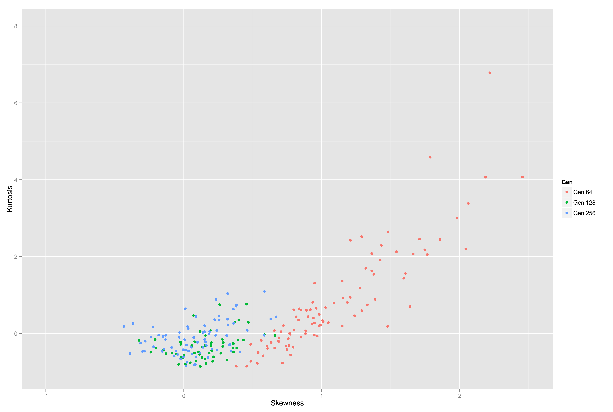
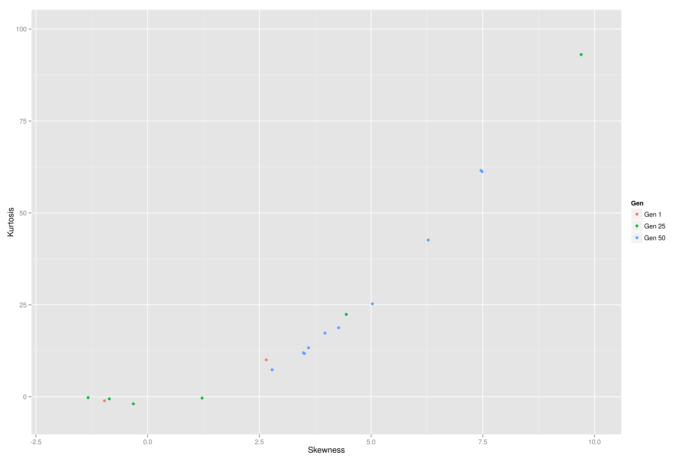
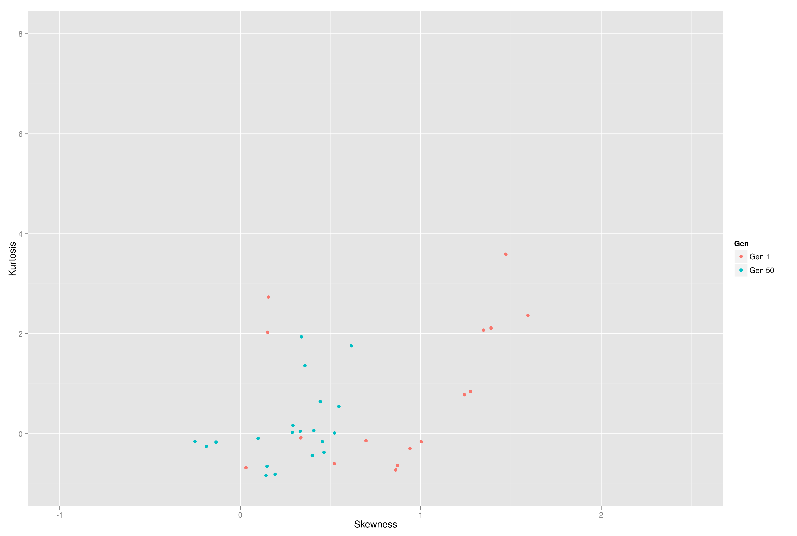

Uncertainty in evolutionary computation
Uncertainty ≠ Noise
JJ Merelo, @jjmerelo GeNeura Team / @geneura
Just a few things are certain in life
...Fitness is not one of them.
There's no such thing as crisp fitness + noise
Fitness is a statistical variable
Fitness:

You wish
Fitness:
Usual approaches to uncertainty
Implicit averaging
Explicit averaging
Resampling...
That will not work with non-gaussian
What's the shape and distribution of this variable
So far: Gamma
Is it always like that?
Let's look at uncertain problems
Three problems
Planet wars
Ms. PacMan
Procedural Backstory generation
Skewness and kurtosis characterize a distribution
MADE
Ms. PacMan
Planet Wars
Conclusions
Gaussian is not the norm.
... But evolution approaches it.
Issues in uncertainty
Create a realistic benchmark
Deal with it statistically
New selection procedures needed for uncertain fitness
Thanks!
Questions?
Follow us
at geneura.wordpress.com
or our open papers
repo git.io/gpapers
Credits
- Gaussian by Lendra Nurezki
- Death and taxes by Paul Stumpr
- Frechet pdf" by user:Arthena - Self-made using python with numpy and matplotlib.. Licensed under GFDL via Commons.
{kind=link}